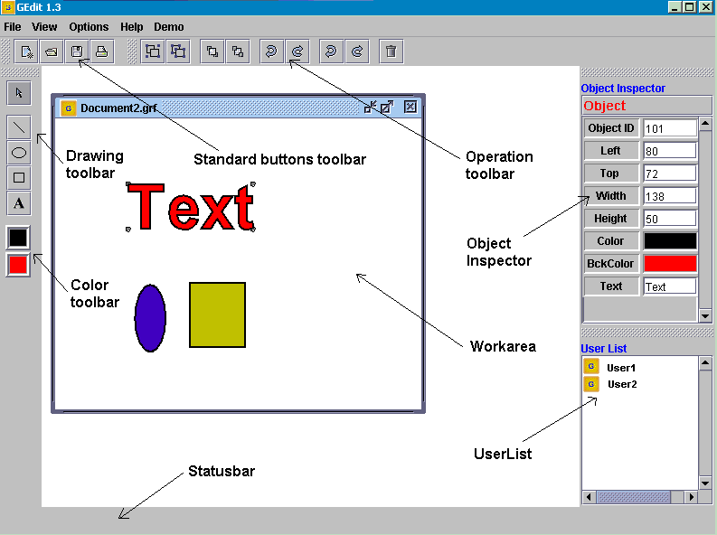

Back to the main page
Back to the main page
Geditor user interface help
The basic layout of geditor user interface is shown in the folowing picture.

Figure 1
The main conponents of the application:
- WorkArea - where the user can draw
- Standard button toolbar - permit standard file operations: open file, new file, print file
- Opertion toolbar - contains operations which operate over the existing object: group, ungroup, bring to front , send to back, deltete, undo/redo(local/global operations)
- Drawing toolbar - permit creation of new object: line, rectangle, ellipse, text box
- Color toolbar - permit to change the drawing color(freground and backgroun color) of the object
- Status bar - display mesages to tha user
- Object insperctor - to visualizete the object properties: position, color, background color, identiciator,...
- Concurrent user toolbar - visializate the concurrent users working on the current file
 For any observation please contact us lcsaszar.inf.ethz.ch.
For any observation please contact us lcsaszar.inf.ethz.ch.
Back to the main page